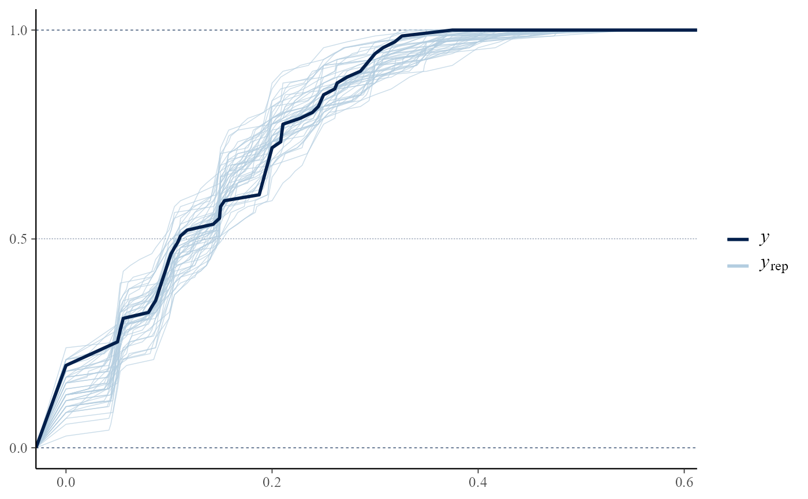
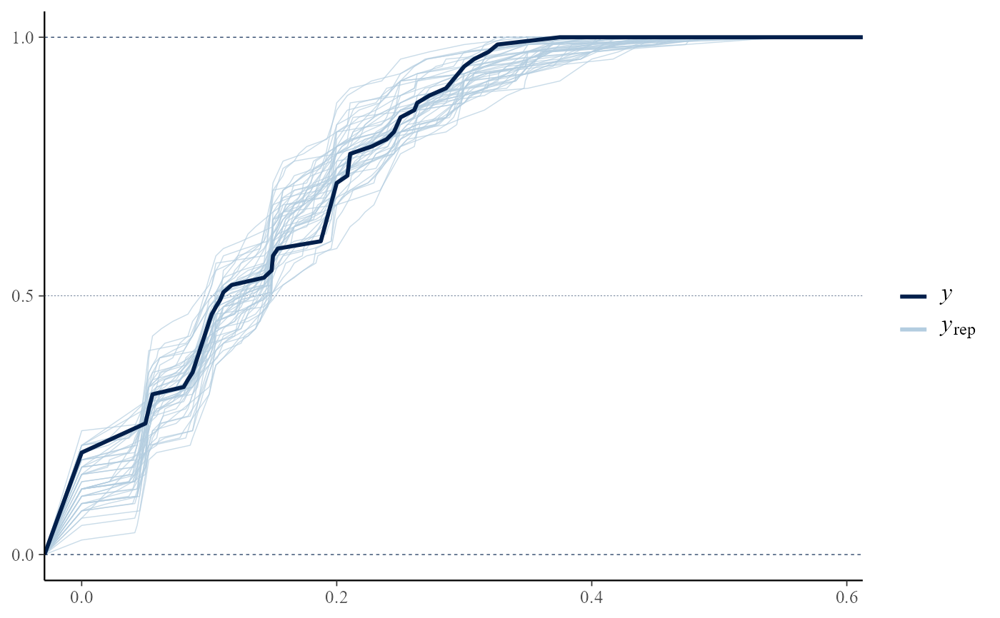
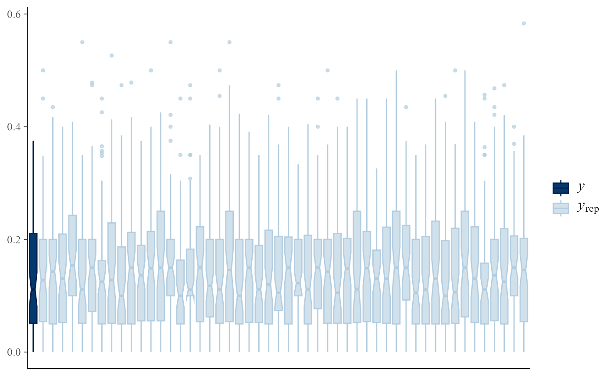
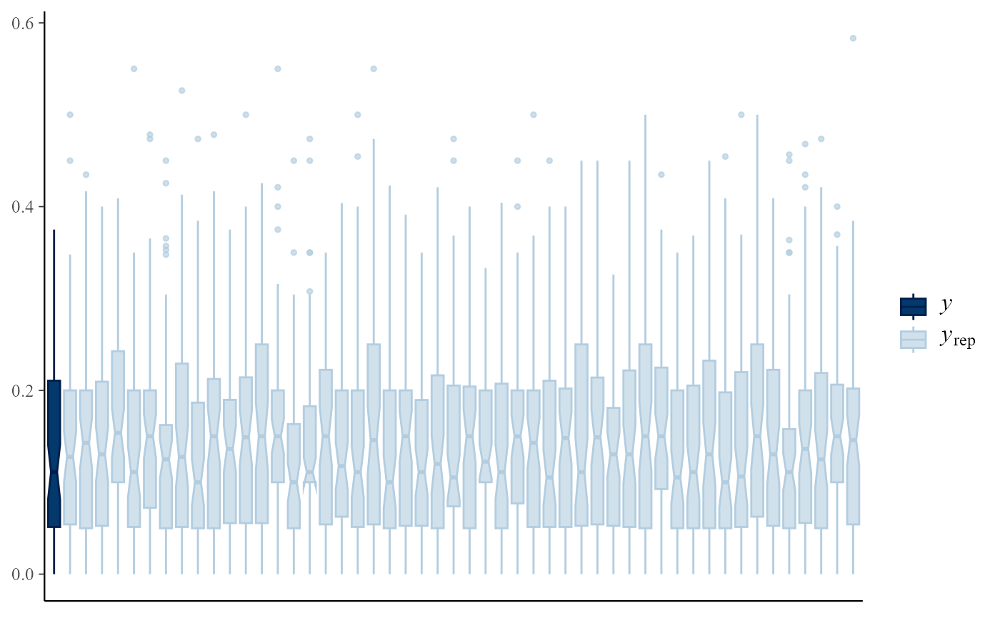
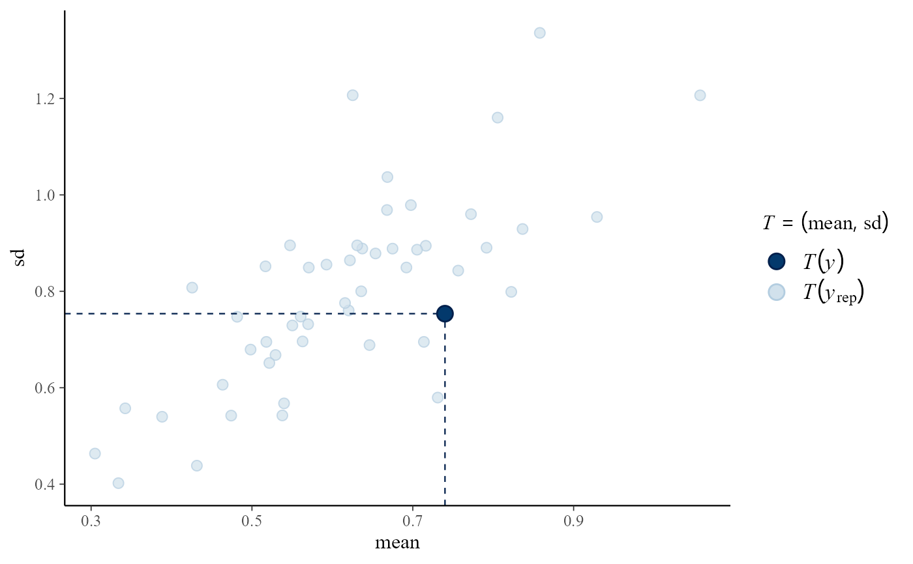
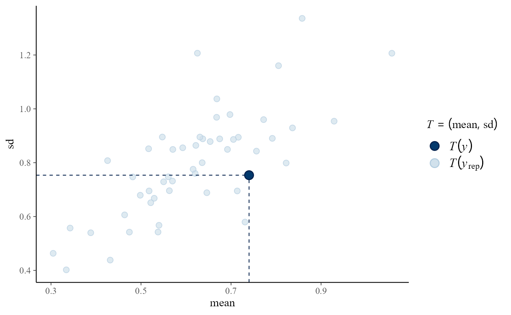

pp_check method for class "hef". This provides an interface
to the functions that perform posterior predictive checks in the
bayesplot package. See PPC-overview for
details of these functions.
# S3 method for hef
pp_check(object, fun = NULL, raw = FALSE, nrep = NULL, ...)Arguments
- object
An object of class "hef", a result of a call to
heforhanova1.- fun
The plotting function to call. Can be any of the functions detailed at PPC-overview. The "ppc_" prefix can optionally be dropped if fun is specified as a string.
- raw
Only relevant if
object$model = "beta_binom"orobject$model = "gamma_pois". Ifraw = TRUEthen the raw responses are used in the plots. Otherwise, the proportions of successes are used in thebeta_binomcase and the exposure-adjusted rate in thegamma_poiscase. In both cases the values used areobject$data[, 1] / object$data[, 2]and the equivalent inobject$data_rep.- nrep
The number of predictive replicates to use. If
nrepis supplied then the firstnreprows ofobject$data_repare used. Otherwise, or ifnrepis greater thannrow(object$data_rep), then all rows are used.- ...
Additional arguments passed on to bayesplot functions. See Examples below.
Value
A ggplot object that can be further customized using the
ggplot2 package.
Details
For details of these functions see PPC-overview. See also the vignettes Conjugate Hierarchical Models, Hierarchical 1-way Analysis of Variance and the bayesplot vignette Graphical posterior predictive checks.
The general idea is to compare the observed data object$data
with a matrix object$data_rep in which each row is a
replication of the observed data simulated from the posterior predictive
distribution. For greater detail see Chapter 6 of Gelman et al. (2013).
References
Jonah Gabry (2016). bayesplot: Plotting for Bayesian Models. R package version 1.1.0. https://CRAN.R-project.org/package=bayesplot
Gelman, A., Carlin, J. B., Stern, H. S., Dunson, D. B., Vehtari, A., and Rubin, D. B. (2013). Bayesian Data Analysis. Chapman & Hall/CRC Press, London, third edition. (Chapter 6). http://www.stat.columbia.edu/~gelman/book/
See also
hef and hanova1 for sampling
from posterior distributions of hierarchical models.
bayesplot functions PPC-overview, PPC-distributions, PPC-test-statistics, PPC-intervals, pp_check.
Examples
############################ Beta-binomial #################################
# ------------------------- Rat tumor data ------------------------------- #
rat_res <- hef(model = "beta_binom", data = rat, nrep = 50)
# Overlaid density estimates
pp_check(rat_res)
 # \donttest{
# Overlaid distribution function estimates
pp_check(rat_res, fun = "ecdf_overlay")

# }
# Multiple histograms
pp_check(rat_res, fun = "hist", nrep = 8)
#> `stat_bin()` using `bins = 30`. Pick better value with `binwidth`.
# \donttest{
# Overlaid distribution function estimates
pp_check(rat_res, fun = "ecdf_overlay")

# }
# Multiple histograms
pp_check(rat_res, fun = "hist", nrep = 8)
#> `stat_bin()` using `bins = 30`. Pick better value with `binwidth`.
 # \donttest{
# Multiple boxplots
pp_check(rat_res, fun = "boxplot")

# Predictive medians vs observed median
pp_check(rat_res, fun = "stat", stat = "median")
#> `stat_bin()` using `bins = 30`. Pick better value with `binwidth`.
# \donttest{
# Multiple boxplots
pp_check(rat_res, fun = "boxplot")

# Predictive medians vs observed median
pp_check(rat_res, fun = "stat", stat = "median")
#> `stat_bin()` using `bins = 30`. Pick better value with `binwidth`.
 # }
# Predictive (mean, sd) vs observed (mean, sd)
pp_check(rat_res, fun = "stat_2d", stat = c("mean", "sd"))
# }
# Predictive (mean, sd) vs observed (mean, sd)
pp_check(rat_res, fun = "stat_2d", stat = c("mean", "sd"))
 ############################ Gamma-Poisson #################################
# ------------------------ Pump failure data ------------------------------ #
pump_res <- hef(model = "gamma_pois", data = pump, nrep = 50)
# \donttest{
# Overlaid density estimates
pp_check(pump_res)
############################ Gamma-Poisson #################################
# ------------------------ Pump failure data ------------------------------ #
pump_res <- hef(model = "gamma_pois", data = pump, nrep = 50)
# \donttest{
# Overlaid density estimates
pp_check(pump_res)
 # Predictive (mean, sd) vs observed (mean, sd)
pp_check(pump_res, fun = "stat_2d", stat = c("mean", "sd"))

# }
###################### One-way Hierarchical ANOVA ##########################
#----------------- Late 21st Century Global Temperature Data ------------- #
RCP26_2 <- temp2[temp2$RCP == "rcp26", ]
temp_res <- hanova1(resp = RCP26_2[, 1], fac = RCP26_2[, 2], nrep = 50)
# \donttest{
# Overlaid density estimates
pp_check(temp_res)
# Predictive (mean, sd) vs observed (mean, sd)
pp_check(pump_res, fun = "stat_2d", stat = c("mean", "sd"))

# }
###################### One-way Hierarchical ANOVA ##########################
#----------------- Late 21st Century Global Temperature Data ------------- #
RCP26_2 <- temp2[temp2$RCP == "rcp26", ]
temp_res <- hanova1(resp = RCP26_2[, 1], fac = RCP26_2[, 2], nrep = 50)
# \donttest{
# Overlaid density estimates
pp_check(temp_res)
 # Predictive (mean, sd) vs observed (mean, sd)
pp_check(temp_res, fun = "stat_2d", stat = c("mean", "sd"))
# Predictive (mean, sd) vs observed (mean, sd)
pp_check(temp_res, fun = "stat_2d", stat = c("mean", "sd"))
 # }
# }